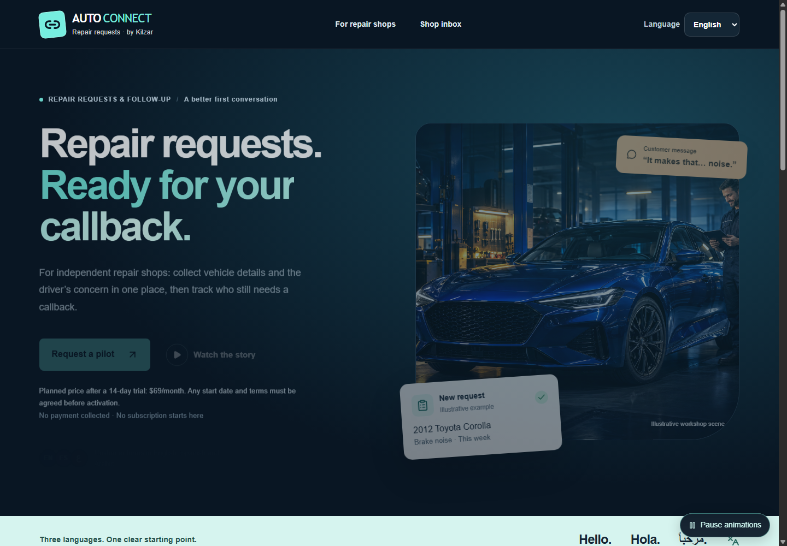

CUSTOMER INTAKE
Structured repair requests
Collect vehicle details, the customer's concern, and preferred timing in a consistent form before the callback.
A lightweight intake and callback layer for independent repair shops. Collect vehicle concerns and preferred timing in English, Spanish, or Arabic—without replacing the software your shop already uses.

Collect vehicle details, the customer's concern, and preferred timing in a consistent form before the callback.
Customer-facing intake is available in English, Spanish, and Arabic.
Shop staff can track each request through new, contacted, booked, or closed status.
Auto Connect is not positioned as a full shop-management system. It is designed to solve a narrower problem cleanly: capture customer requests and make callbacks easier to manage.
Collect customer and vehicle information, organize concerns and timing, and track staff follow-up status.
Diagnose the vehicle, guarantee appointments or customer traffic, replace the shop's service-management system, or make repair decisions.
The participating shop remains responsible for customer communication, estimates, service, repair decisions, and its own operational policies.
Kilzar is starting with independent repair shops and service managers who want a simpler intake and callback workflow.